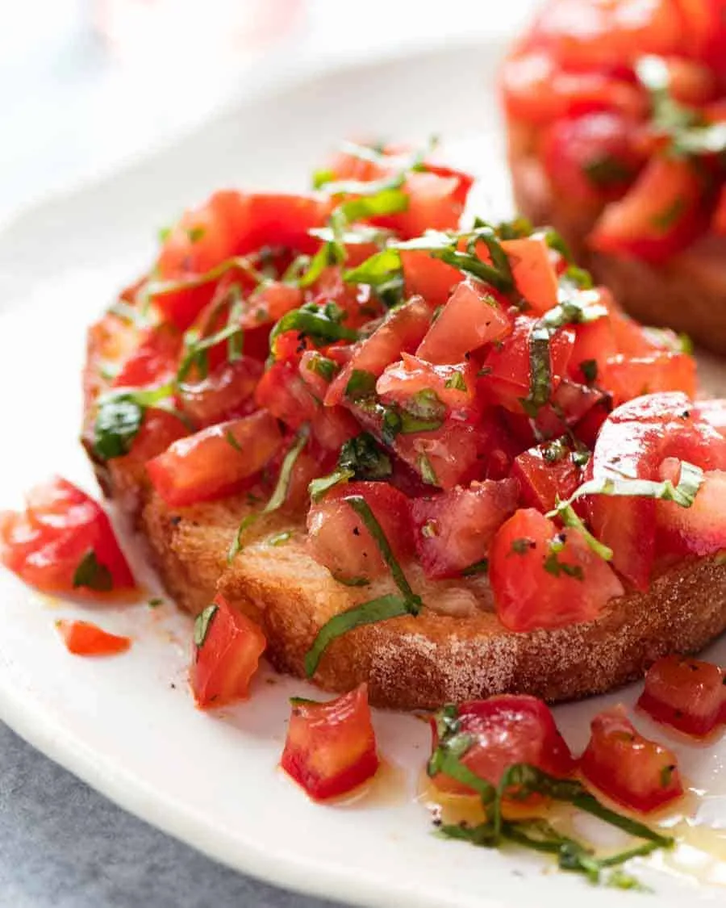

Bruschetta
Bruschetta is one of those foods that’s impossible to eat elegantly.
When you gorge on a crunchy piece of bread that’s piled high with tomato,
dripping with juices and olive oil……well, in my world, the best I can
hope for is that I don’t end up with a tomato-mud-slide down the front of my top.
That there’s juices on my chin goes without saying!
And I’m totally ok with that. All my favourite foods require napkins and
plenty of finger licking. Buffalo Wings, Cheese & Garlic Crack Bread,
Pastrami Sandwiches, Brisket Sliders.
You get the picture!
What you'll need:
-
Juicy, ripe tomatoes at room temperature, not fridge cold
- Good quality extra virgin olive oil
-
A good, crusty bread that can hold up to the juicy topping.
Sourdough and Ciabatta are my picks. Skip the basic
sandwich bread – it will literally disintegrate from the juices.
Thin baguettes work ok if you toast well (because they have a smaller
surface area). Great starter option!
-
**CHEFFY TIP** Rub the hot toast with garlic. This is a little trick
that gives bruschetta an edge that makes it even better than just mixing
garlic through the tomato mixture. It’s the reason why the bruschetta at
your favourite bistro is so good – now you can replicate it yourself at home!
How to make it:
-
Deseed tomato (optional) – Halve the tomato then scoop
out the watery seeds using a teaspoons. Deseeding is optional, not
mandatory! It removes the watery centre which dilutes the flavour.
To be honest, I never bother deseeding when I’m making this just for myself!
-
Chop tomato into small pieces.
-
Toss with chopped basil, olive oil, salt and pepper – that’s all you
need for a classic Italian version. More on variations below!
Set aside for 5 to 10 minutes to get it real juicy and for the flavours
to come together – it’ll be fine for up to 30 minutes but after that, it gets a bit too mushy for my liking.
-
Toast bread – Meanwhile, brush each side of the bread with olive oil
and toast in the oven until golden. Or, for a quicker version, just use your toaster.
-
Rub with garlic – Whichever method you use to toast your bread, don’t
skip rubbing the bread lightly with the cut face of a garlic clove for authentic bruschetta flavour!
-
Pile on the tomato basil topping and devour!
TIP: Use the juicy seeds you scoop out for anything tomato based that
you make – just toss it in while simmering. Think: Bolognese,
Lasagne (or Veg Lasagne), Cannelloni, Baked Ziti, tomato based soups like
Lentil Soup or Taco Soup.
Want to try something else? Go back or look
at these: